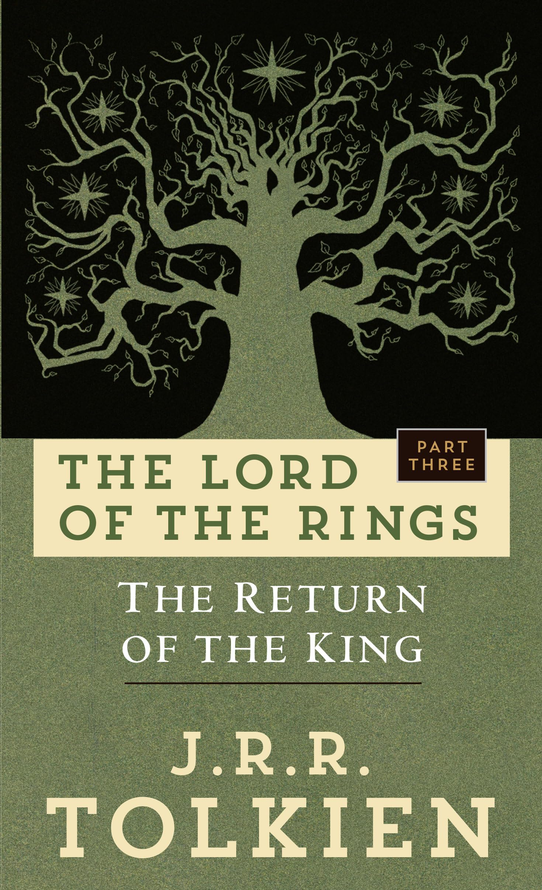
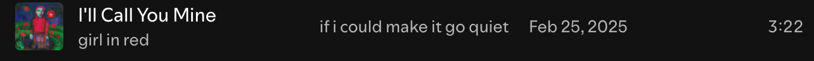

I am currently reading the last book in the Lord of the Rings series, Return
of the King. This is a text for class but I do enjoy the book
thoroughly and love reading the series. The imagery is
very descriptive and the tale is exciting and exotic.
Reading >
Media intake for the week:
This is my first time watching White Lotus. I started the third
season with my roomate and it has been quite interesting. This season
has been chaos among the calm where it did not seem like much
events or drama was going on but it works itself out to be an interesting plot.
I think the characters are the best part of the show, all of
them have some unique aspect to themselves.

Song for the week:


and this weekend...